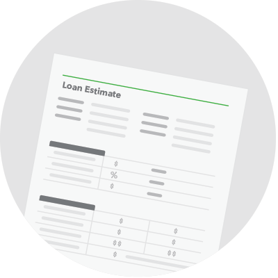

Loan Estimate Explainer
When you receive a Loan Estimate, it should reflect a particular loan you discussed with a lender. Check to see that everything matches your expectations. If something looks different from what you expected, ask why. This tool will help you review your Loan Estimate and get definitions for unfamiliar terms.
